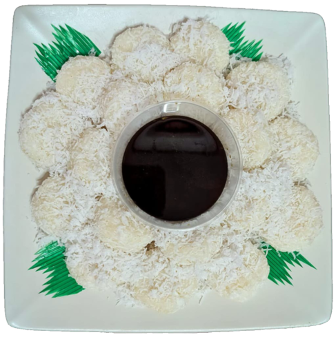
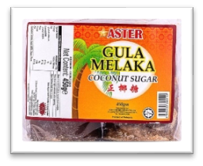
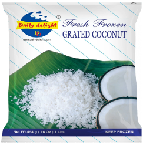
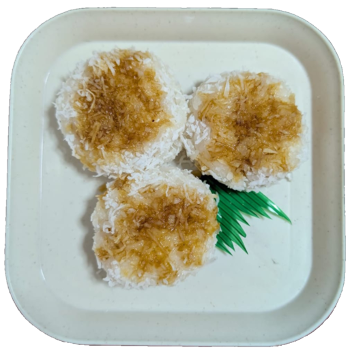

Nanyang Coconut Rice Cake
Nanyang coconut glutinous rice cake is a traditional Southeast Asian dessert made with glutinous rice and sugar. The name "Nanyang" refers to the historical Chinese term for the South East Asia, encompassing regions like Malaysia, Singapore, Indonesia, and Thailand, where this type of dessert is commonly enjoyed.
This rice cake is usually steamed or baked, giving it a chewy and slightly sticky texture. It's often infused with pandan for added fragrance and sometimes topped with grated coconut or coconut cream for extra richness. The dessert is popular for its mildly sweet, creamy coconut flavour and is commonly found in local markets, festive celebrations, and traditional tea-time snacks.

Nanyang Coconut Glutinous Rice Cake Recipe
Ingredients:
- Glutinous rice (糯米) – 700g
- Gula Melaka (椰糖) – 200g to 220g
- Water (水) – 100g
- Salt (盐) – 1 Teaspoon
- Grated coconut (椰丝) – 250g



For the Glutinous Rice Base:
- 41/2 cups around 700 grams of glutinous rice
- 1/2 teaspoon salt
- 1 pandan leaf, knotted (optional)
For the Coconut Palm Sugar:
- 3/4 cup gula Melaka (palm sugar), finely chopped
- 1/4 cup water
- 1 teaspoon pandan extract (optional)
For the Garnish:
- Freshly grated coconut, lightly steamed with a pinch of salt
Instructions:
-
Make the Coconut Palm Sugar Layer:
- In a saucepan, dissolve gula Melaka in water over low heat until fully melted.
- Note: Keep stirring to prevent it from burnt.
- When its fully melted, strain to remove impurities.
-
Make the Grated Coconut Layer:
- Place the shredded coconut together with salt into a bowl and mix well.
- Place the mixture onto a plate and steam it for 5 mins.
-
Prepare the Glutinous Rice:
- Rinse the glutinous rice and place it inside rice cooker.
- Pour water into the cooker with the rice. The rice to water ratio is 1 cup of rice to 4/5 cups of water.
- Once the rice cooker has completed cooking, wait for another 20 minutes until the rice is fully cooked and sticky.
- Transfer the cooked rice to a plate and press it into ball or small cake shape, and press firmly with the grated coconut palm sugar layer. Set aside.
-
Assemble the Cake:
- Pour the coconut palm sugar mixture onto a bowl.
- Place the glutinous rice cake onto a plate and let it cool to room temperature.
This rich and fragrant Nanyang Coconut Glutinous Rice Cake is a delightful Southeast Asian treat with layers of sticky rice and sweet coconut-palm sugar custard. Perfect for tea time or special occasions! 😊